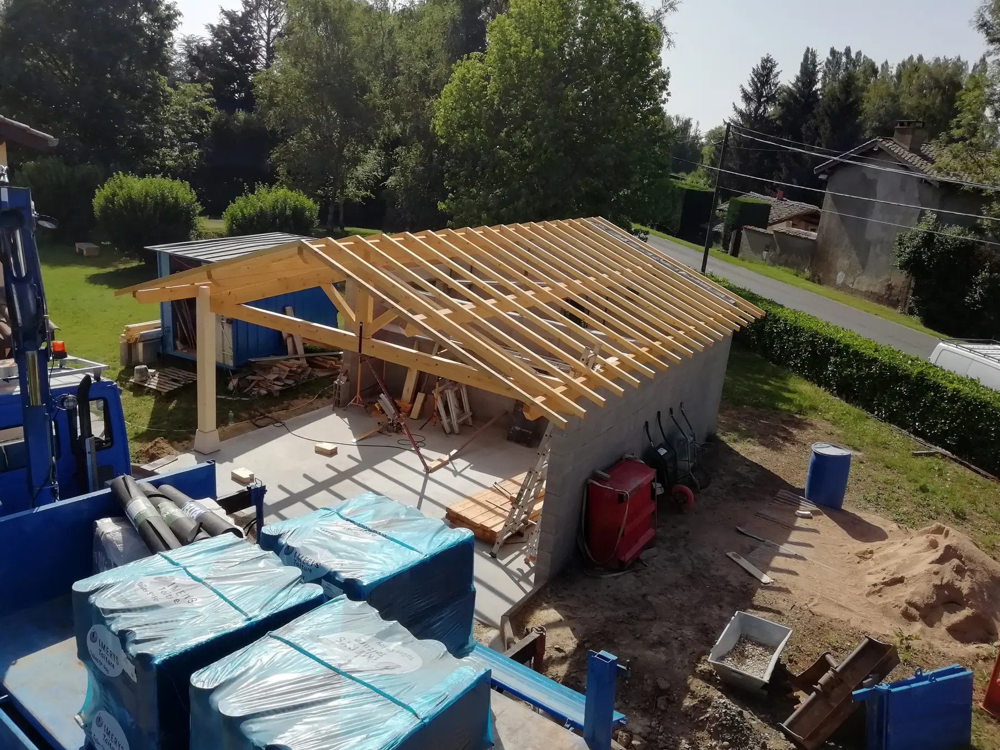
Accueil / Toiture et menuiserie
Toiture,charpenteet menuiserie.
Charpente traditionnelle, couverture, escaliers et aménagements sur mesure. Tout le travail du bois, par un charpentier formé chez les Compagnons.
La charpente, taillée à l'ancienne.
Une charpente traditionnelle se dessine avant de se tailler. Chaque assemblage est tracé, chaque pièce coupée pour sa place exacte. C'est ce que les Compagnons appellent l'art du trait.
Abri, carport, pergola, charpente de maison ou de bâtiment ancien : l'entreprise conçoit, taille, lève et couvre.
- Taille et pose de charpente traditionnelle
- Réfection de toiture
- Couverture
- Recherche de fuite
- Nettoyage de toiture
- Habillage de bandeaux
- Installation de Velux
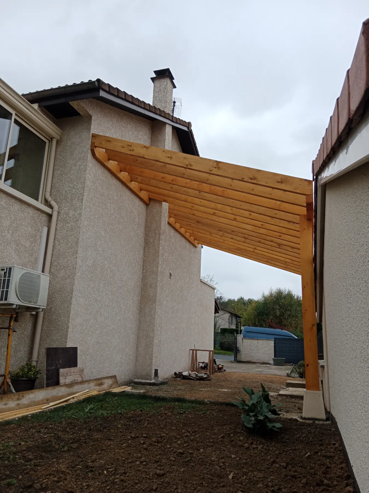
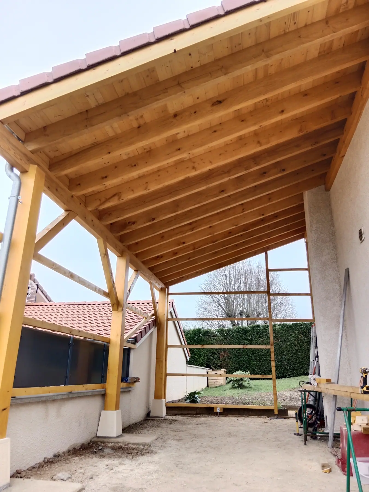
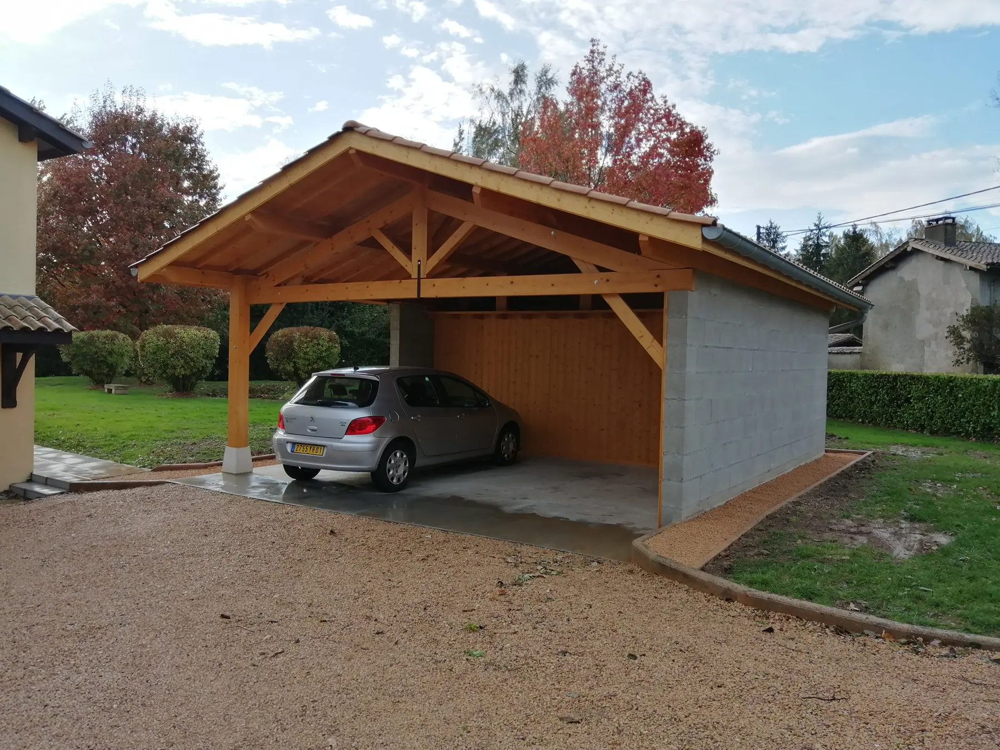
Sur le toit.
Réfection complète, couverture en tuiles, cheminées, fenêtres de toit : avec les moyens de levage de l'entreprise.
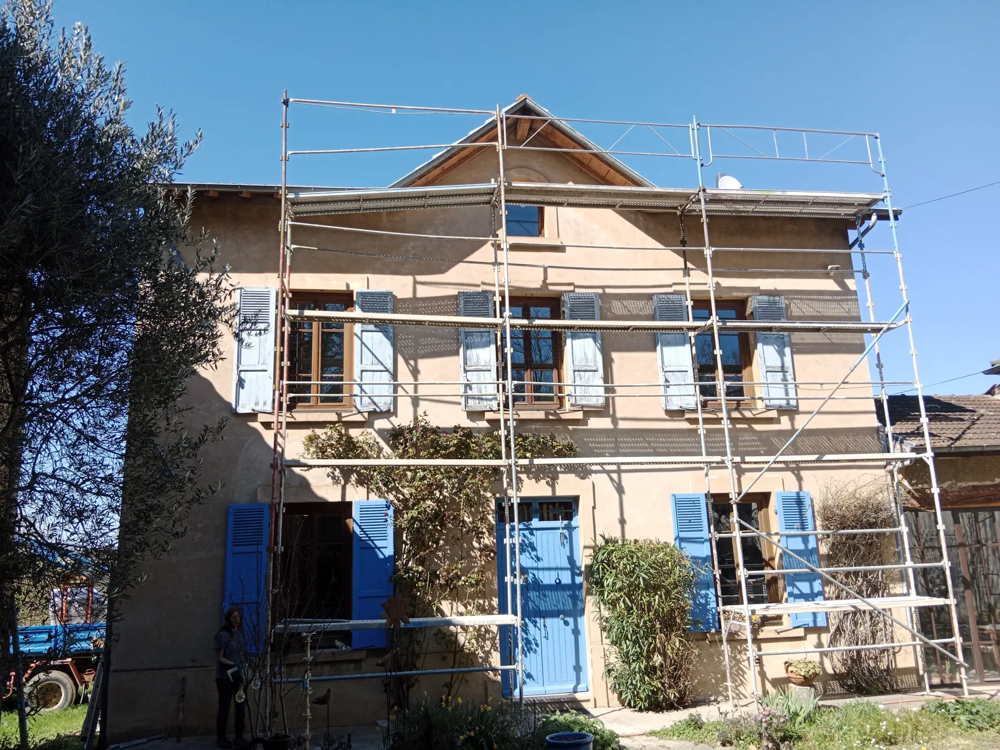
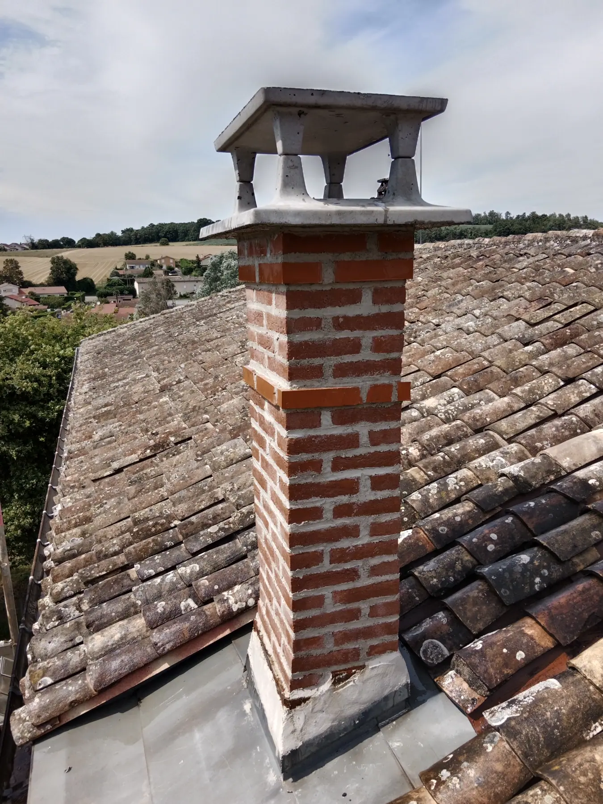
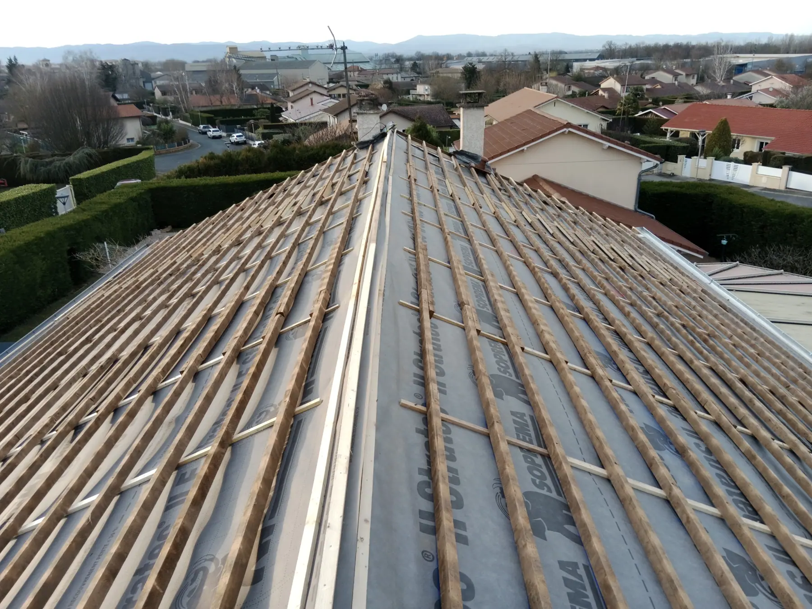
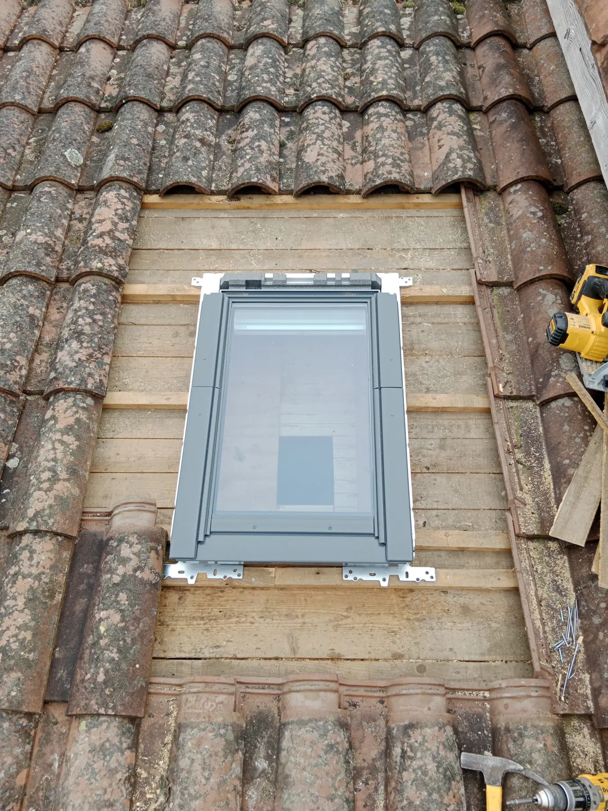
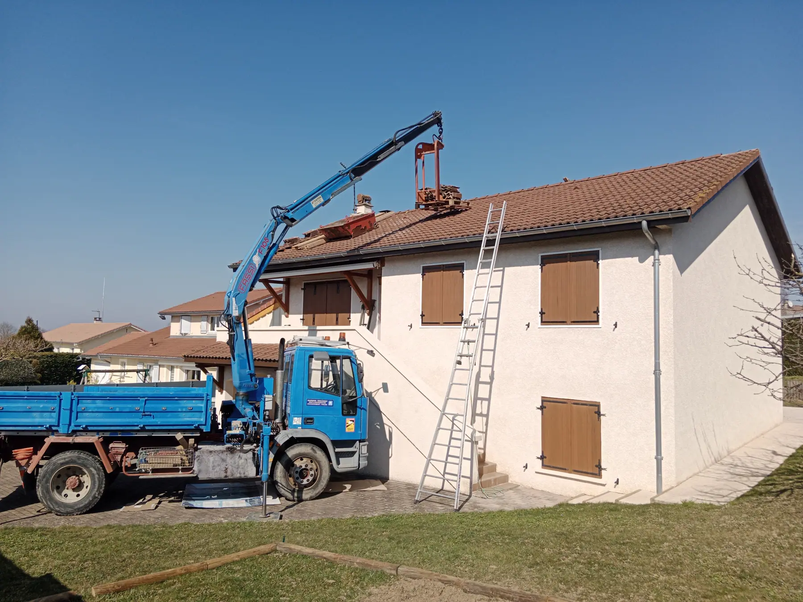
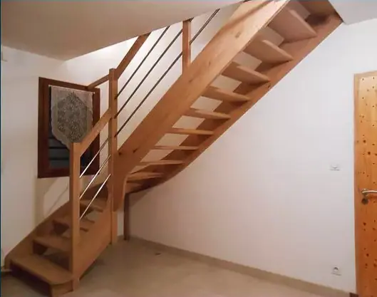
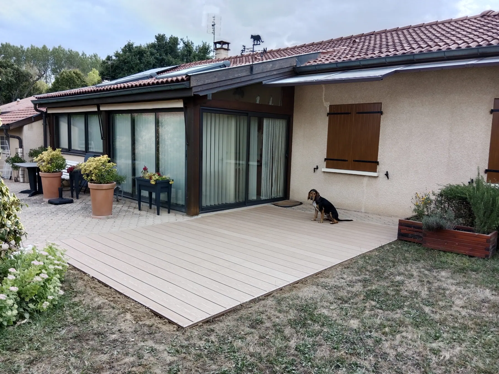
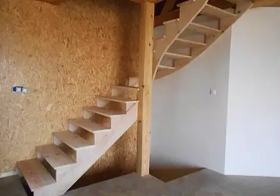
Un projet ? Parlons-en sur place.
Devis rapide et détaillé, pour les particuliers comme pour les collectivités, les assurances et les régies.